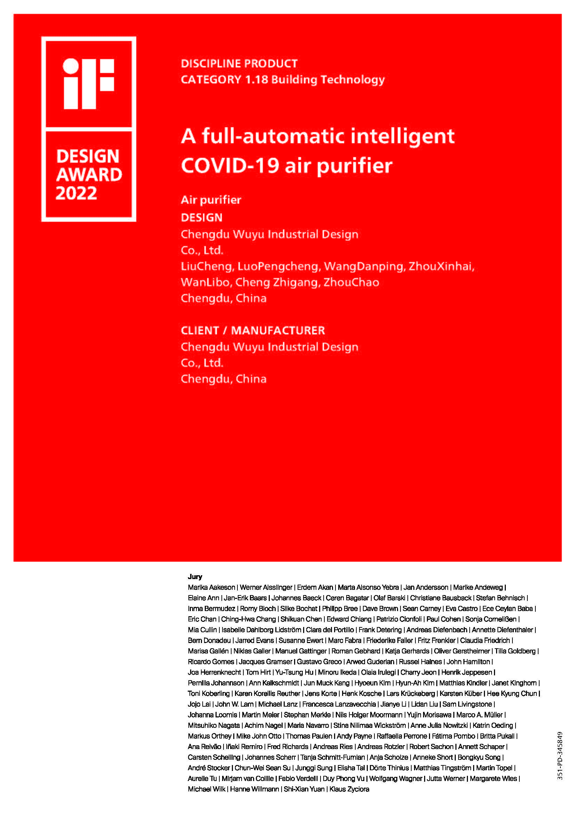
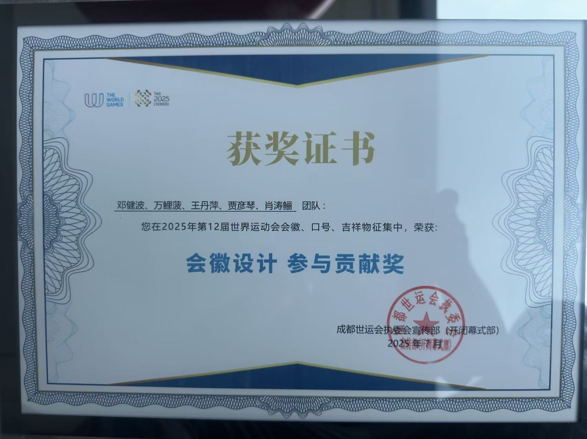
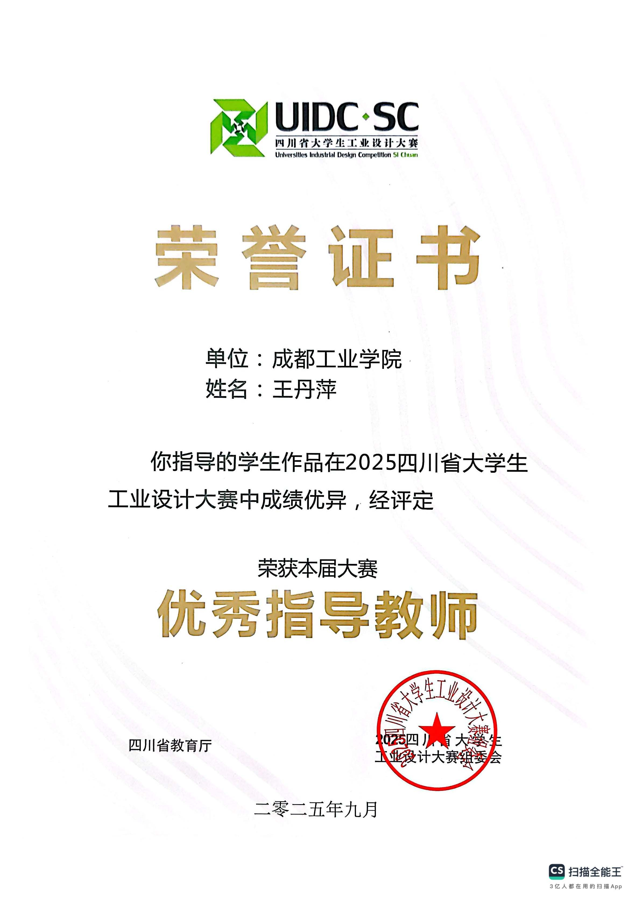
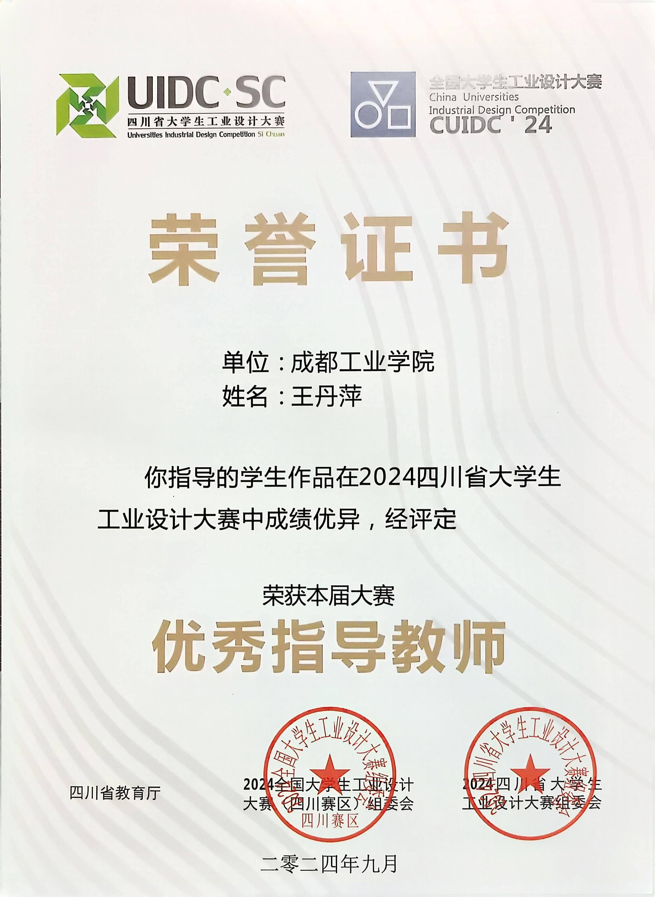
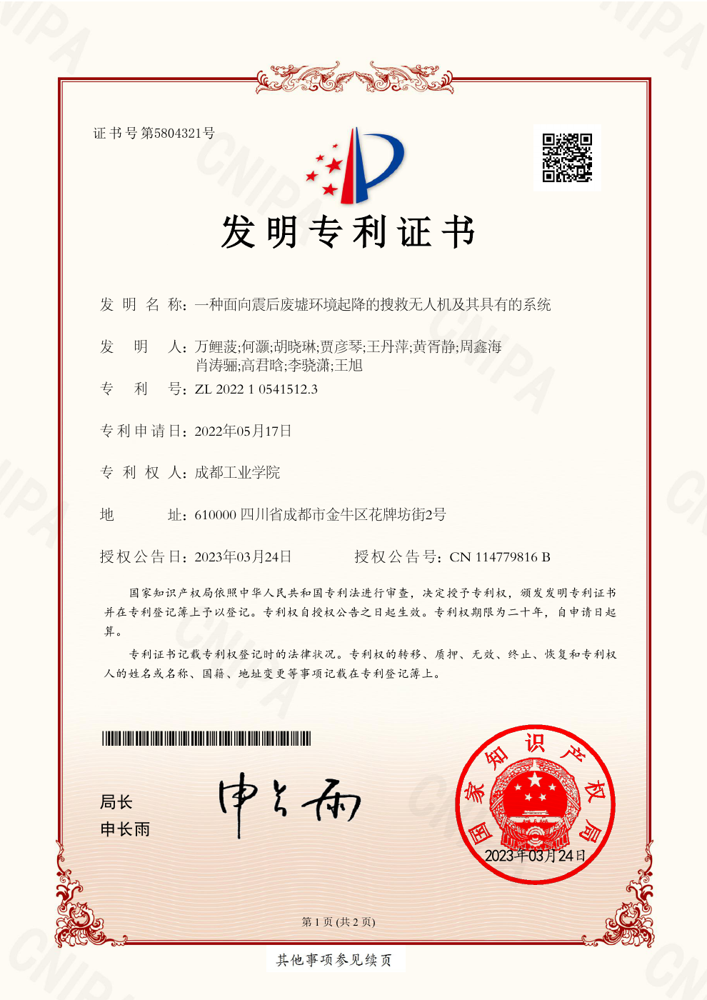
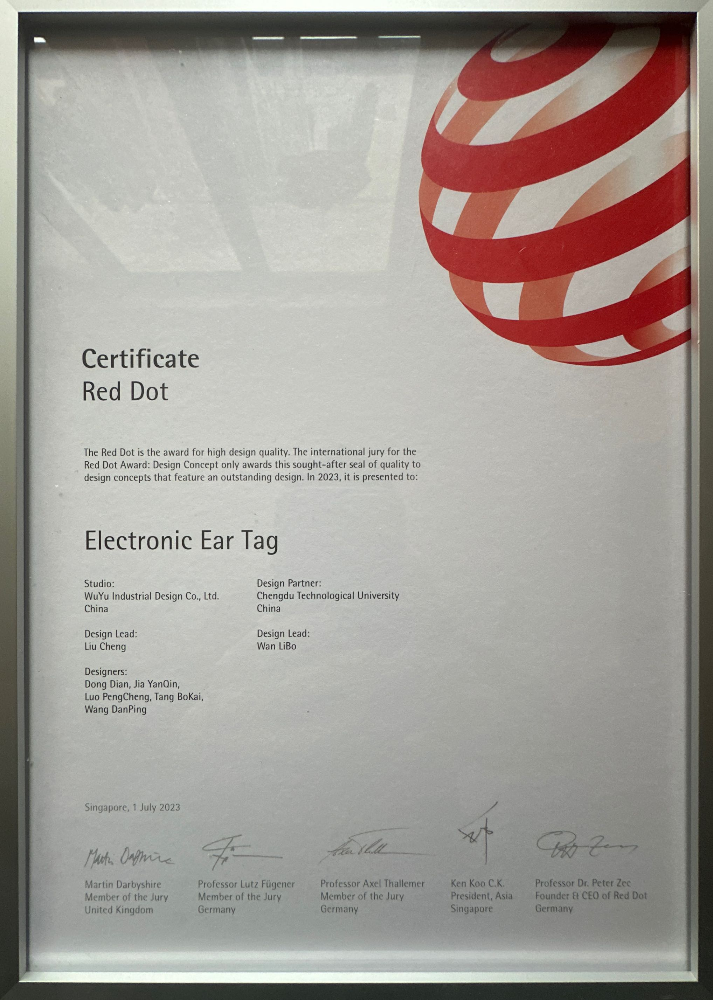
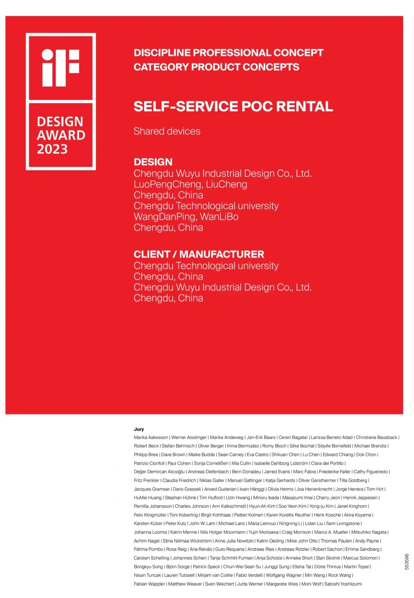

Awards & honours
- Outstanding Instructor awards in national and provincial student design competitions, 2024–2025.
- Outstanding Graduate Student, Chongqing University, 2014.
- Huang Qianheng Scholarship, Chongqing University, 2011.
Award & patent certificates
Select an image to enlarge it. Use the arrow keys to browse and Esc to close.













